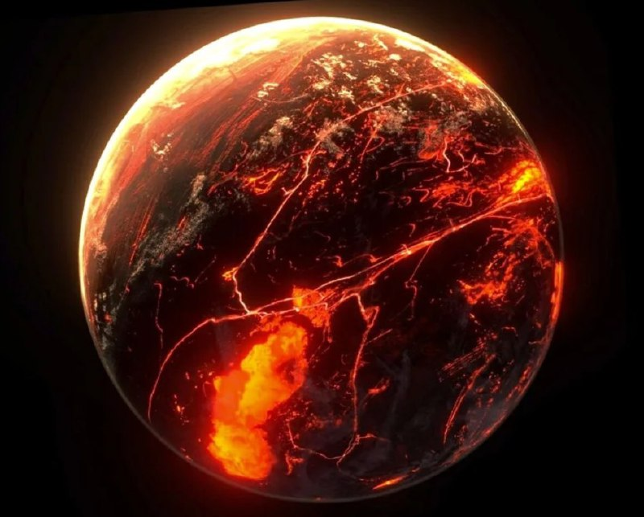

CoRoT-7b - странная экзопланета с каменными снегопадами. Как и многие другие экзопланеты, эта привязана к своей звезде и расположена близко от нее.
На стороне, обращенной к звезде, температура достигает 2200 °С, а на другой опускается до -220 °С.
Лава со стороны звезды нагревается и начинает испаряться так же, как вода на нашей планете.
Это создает большие каменные облака, которые затем охлаждаются на более холодной стороне планеты, и там идет каменный дождь.
Если бы могли пережить экстремальные температурные условия этой планеты, было бы интересно на это посмотреть.
На горячей стороне планеты идет дождь из магмы, а на холодной магма затвердевает до того, как упадет на землю, совсем как снег на Земле.
Такой снег, без сомнения, убьет вас, если вы под него попадете.
